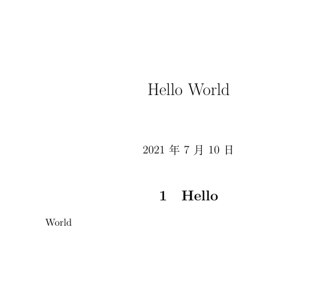

Latex环境的安装和配置
Latex环境的安装和配置
TeXLive的安装
- 进入官方下载地址下载
texlive.iso，Index of /ctan/tex-archive/systems/texlive/Images (utah.edu) - 右击
texlive.iso，选择装载，并双击install-tl-windows.bat - 修改下载路径，取消勾选
安装TeXworks前端 - 点击
Advanced->Customize，取消除了英文中文以外的语言，左边选择Chinese、CJK、English，右边取消勾选TeXworks - 点击安装并进行漫长的等待
TeXstudio的安装
- 下载TeXStudio，TeXstudio - A LaTeX editor (sourceforge.net)
- 更换安装路径并完成安装
- 更改语言设置：
Option->Configure TeXstudio->General->zh_CN - 更改默认编译器为XeLaTeX便于编译中文文档：
Option->Configure TeXstudio->Build->Default Compiler->XeLaTeX - 更改字体编码为
utf-8：Option->Configure TeXstudio->Editor->Default Font Encoding->UTF-8
Latex环境的测试
在TeXStudio中新建一个文件，输入以下代码
1 | \documentclass{ctexart} |
得到如下结果：

参考资料
Related Articles


Comment